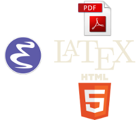

slides
CHE COS’È EMACS?
Emacs è un editor di testo nato a metà degli anni ‘70 e il cui sviluppo è ancora attivo.
Emacs non è un elaboratore di testo -> Il testo scritto con Emacs è plain text
PERCHÉ EMACS!?
Perché usare un editor di testo così vecchio?
- ci sono tantissime combinazioni di tasti da imparare
- nel manuale contenuto in Emacs, le combinazioni di taste sono spiegate usando questa strana forma:
C-x C-n
oppure:
C-c C-e h h
Programmi come LibreOffice Writer e Office Word permettono di avere grassetto, corsivo, cambiare font, ecc.
Emacs non formatta il testo.
Emacs non permette di incollare immagini nel testo che stiamo scrivendo.
Emacs non salva i file che scriviamo nei formati più noti (.doc/.docx/.odt).
Emacs appena installato è brutto da vedere
Chi usa Emacs prima o poi avrà a che fare con Emacs Lisp, un dialetto di Lisp che si presenta in modi spaventosi come questo:
(setq redisplay-dont-pause t scroll-margin 1 scroll-step 1 scroll-conservatively 10000 scroll-preserve-screen-position 1)
Allora, perché usare Emacs!?
Emacs aiuta a concentrarsi sul testo che stiamo scrivendo.
Emacs può essere configurato in modo da lasciare spazio sullo schermo solo al testo.
Emacs permette di fare tutto senza allontanare le mani dalla tastiera.
Spostare la mano sul mouse = perdere tempo (provatelo!)
Emacs permette di spostarsi fra caratteri, parole, righe e paragrafi rapidamente.
Emacs consente di cercare avanti e indietro nel testo direttamente dalla tastiera, sia con chiavi di ricerca semplici che con espressioni regolari.
Emacs non ha finestre di dialogo (popup)!

Esistono già tante estensioni per semplificare o migliorare esigenze specifiche:
- formattazione del testo (LaTeX) -> ESEMPIO
- esportazione in vari formati (PDF, HTML) -> ESEMPIO
- integrazione con linguaggi di programmazione
- …
Emacs è altamente personalizzabile.
Sta a voi scegliere fino a che punto adattarlo alle vostre esigenze.
Per i più coraggiosi, il codice sorgente è liberamente scaricabile e consultabile.
Emacs, sempre a discrezione dell’utente, consente di:
- navigare sul web
- leggere la posta elettronica
- aggregare feed RSS
- fare conti matematici
- consultare il calendario
- creare PDF e HTML
- esplorare i file del proprio sistema
- modificare file via remoto
- …
La cosa fondamentale è non avere paura di incrociare le dita sulla tastiera!
DOMANDE?